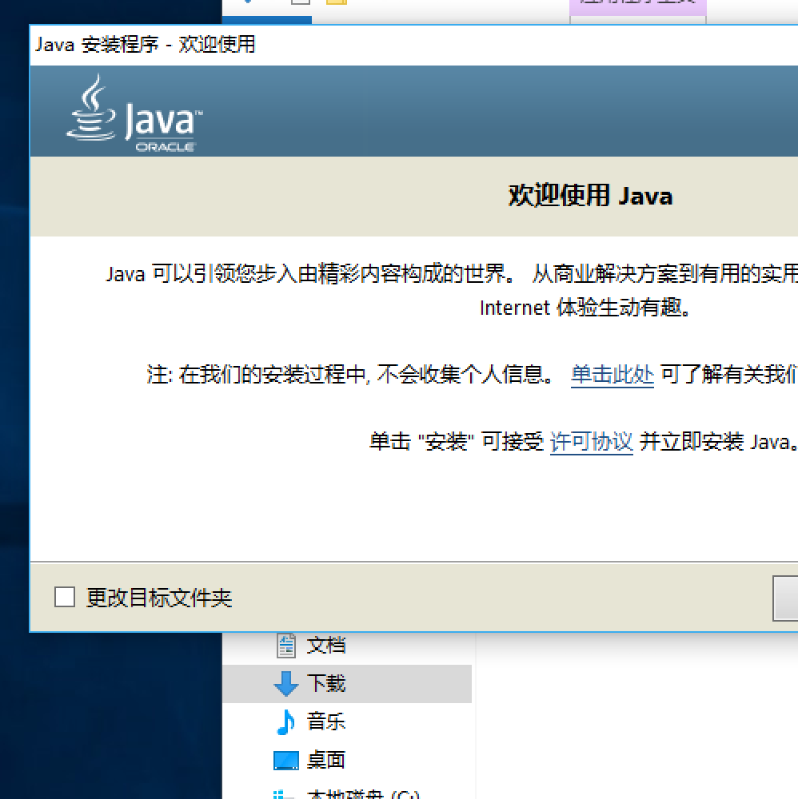
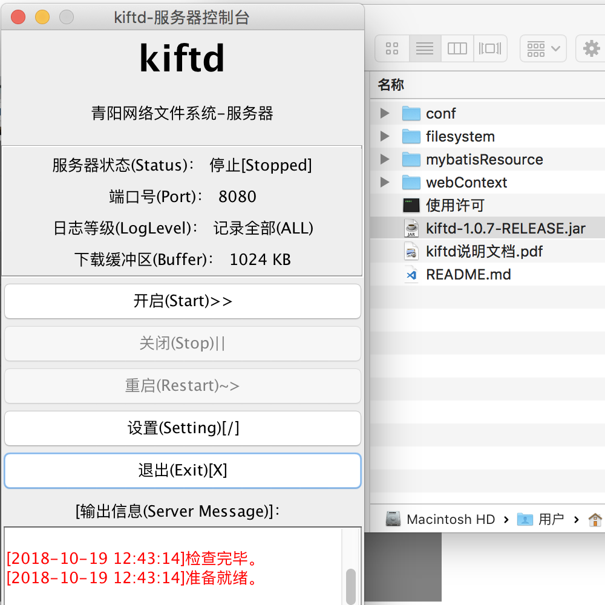
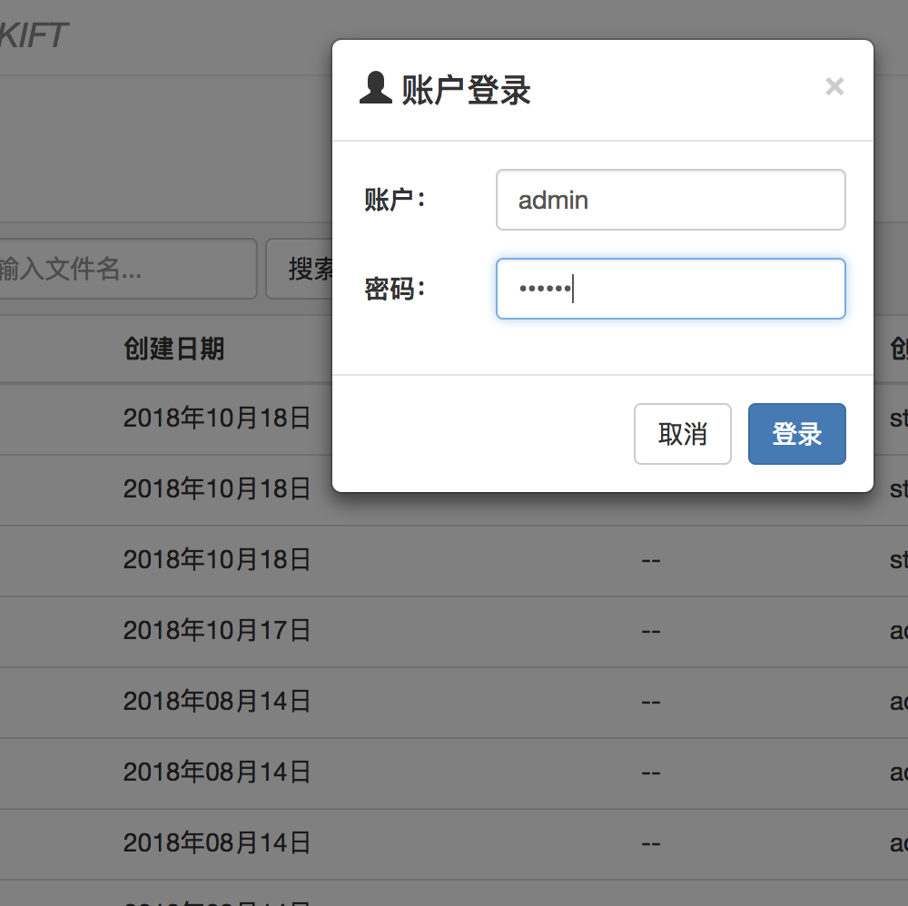

1.安装JAVA
使用kiftd，JAVA“运行环境”必不可少（就像很多程序或游戏需要安装VC运行库或DirectX一样）。它的安装过程十分简单，并且无需太多时间：您只需前往JAVA的官方网站来免费下载一份JAVA运行环境安装包，之后运行它并“下一步”、“下一步”再“下一步”即可。
了解JAVA……

2.下载并解压kiftd
现在，可以开始安装kiftd了。kiftd的安装更加简单——通俗来说就是“解压即用”。首先 下载kiftd ，之后将下载好的ZIP压缩包解压至本地，然后双击运行其中的 “.jar” 应用程序，便可开启kiftd。就是这样，没有任何冗杂的配置过程。

3.开始使用
如何开始？请点击位于主界面上的“开启”按钮，之后请稍等片刻——当服务器状态一栏变为“运行”后，您便可以打开您的 浏览器 （推荐使用Chrome等现代浏览器，如需使用国产高速浏览器，请使用“极速模式”浏览），并在地址栏中输入： http://您的IP地址:kiftd端口号/ （端口号可在kiftd主界面查看），这样，您便能够打开您的网盘主页了。请使用初始账户admin（密码：000000）登入系统，开始随意体验kiftd的全部功能！（获取更加详细的说明请阅读随每份程序附带的《kiftd说明文档》！）
了解更多？

更多帮助！
如果您需要更加详细的指引，请阅读随每一份kiftd分发的<<kiftd说明文档>>。这是kiftd的详细使用说明，其中包括了更加具体的安装流程及各项功能的介绍（图文并茂，示例全面），您可以通过阅读该文档快速学会kiftd的使用方法。 相信我，它并不枯燥，无论您是刚刚学会开机关机的小白用户，还是熟练使用命令操作计算机的高级用户，均能很轻松地读懂它！
使用中遇到问题？
如果您遇到问题，欢迎至信kohgylw@163.com，作者会尽快为您解答。